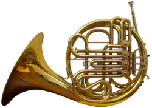

The French horn is a brass instrument made of tubing wrapped into a coil with
a flared bell. The double horn in F/B (technically a variety of German horn) is
the horn most often used by players in professional orchestras and bands. A
musician who plays any kind of horn is generally referred to as a horn player .
Pitch is controlled through the combination of the following factors: speed of
propulsion of air through the instrument (controlled by the player's lungs and
thoracic diaphragm); diameter and tension of lip aperture (controlled by the
player's lip muscles—the embouchure) in the mouthpiece; plus, in a modern French
horn, the operation of valves by the left hand, which route the air into extra
sections of tubing. Most horns have lever-operated rotary valves, but some,
especially older horns, use piston valves and the Vienna horn uses double-piston
valves, or pumpenvalves.
The backward-facing orientation of the bell relates to
the perceived desirability to create a subdued sound, in concert situations, in
contrast to the more piercing quality of the trumpet. A horn without valves is
known as a natural horn, changing pitch along the natural harmonics of the
instrument. Pitch may also be controlled by the position of the hand in the
bell, in effect reducing the bell's diameter. The pitch of any note can easily
be raised or lowered by adjusting the hand position in the bell.

Three valves control the flow of air in the single horn, which is tuned to F or
less commonly B♭. The more common double horn has a fourth valve, usually
operated by the thumb, which routes the air to one set of tubing tuned to F or
another tuned to B♭.
Triple horns with five valves are also made, tuned in F,
B♭, and a descant E♭ or F. Also common are descant doubles, which typically
provide B♭ and Alto F branches. This configuration provides a high-range horn
while avoiding the additional complexity and weight of a triple.
A crucial element in playing the horn deals with the mouthpiece. Most of the
time, the mouthpiece is placed in the exact center of the lips, but, because of
differences in the formation of the lips and teeth of different players, some
tend to play with the mouthpiece slightly off center.
Although the exact
side-to-side placement of the mouthpiece varies for most horn players, the
up-and-down placement of the mouthpiece is generally two-thirds on the upper lip
and one-third on the lower lip.
When playing higher notes, the majority of
players exert a small degree of additional pressure on the lips using the
mouthpiece. However, this is undesirable from the perspective of both endurance
and tone: excessive mouthpiece pressure makes the horn sound forced and harsh,
and decreases player's stamina due to the resulting constricted flow of blood to
the lips and lip muscles. It is the goal of all serious brass musicians to
develop their technique such that additional mouthpiece pressure is avoided
altogether, or at the very least, minimized.
The name "French horn" is found only in English, first coming into use in the
late seventeenth century. At that time, French makers were preeminent in the
manufacture of hunting horns, and were credited with creating the now-familiar,
circular "hoop" shape of the instrument.
As a result, these instruments were
often called, even in English, by their French names: trompe de chasse or cor de
chasse (the clear modern distinction between trompes, trumpets, and cors, horns,
did not exist at that time). German makers first devised crooks to make such
horns playable in different keys—so musicians came to use "French" and "German"
to distinguish the simple hunting horn from the newer horn with crooks, which in
England was also called by the Italian name corno cromatico (chromatic horn).
More recently, "French horn" is often used because the word "horn" by itself,
even in the context of musical instruments, may refer to nearly any wind
instrument.
Nevertheless, the adjective has normally been avoided when referring
to the European orchestral horn, ever since the German horn began replacing the
French-style instrument in British orchestras around 1930. The International
Horn Society has recommended since 1971 that the instrument be simply called the
horn.
There is also a more specific use of "French horn" to describe a particular horn
type, differentiated from the German horn and Vienna horn. In this sense,
"French horn" refers to a narrow-bore instrument (10.8 to 11 mm) with three
Périnet (piston) valves.
It retains the narrow bell-throat and mouthpipe crooks
of the orchestral hand horn of the late eigteenth century, and most often has an
"ascending" third valve. This is a whole-tone valve arranged so that with the
valve in the "up" position the valve loop is engaged, but when the valve is
pressed the loop is cut out, raising the pitch by a whole tone